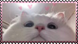
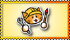
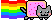

WELCOME! ようこそ！

about me / hakkımda
Kendimce bir seyler üretiyorum. / I make things in my own way. ✦ Kod yazıyorum, arayüzlerle oynuyorum ve biraz da eski web' nostaljisi biriktiriyorum. Bu site, 2000'lerin kisisel sayfalarına küçük bir selam.
Merhaba, ben akaMusti. Internette gezinmeyi, küçük araçlar yapmayı ve gereksiz yere detaylı seyler ögrenmeyi severim. Hos geldin! / Welcome, stranger!
projects / projeler
by akaMusti ✦ made with ♥, HTML & a little nostalgia
social / sosyal medya